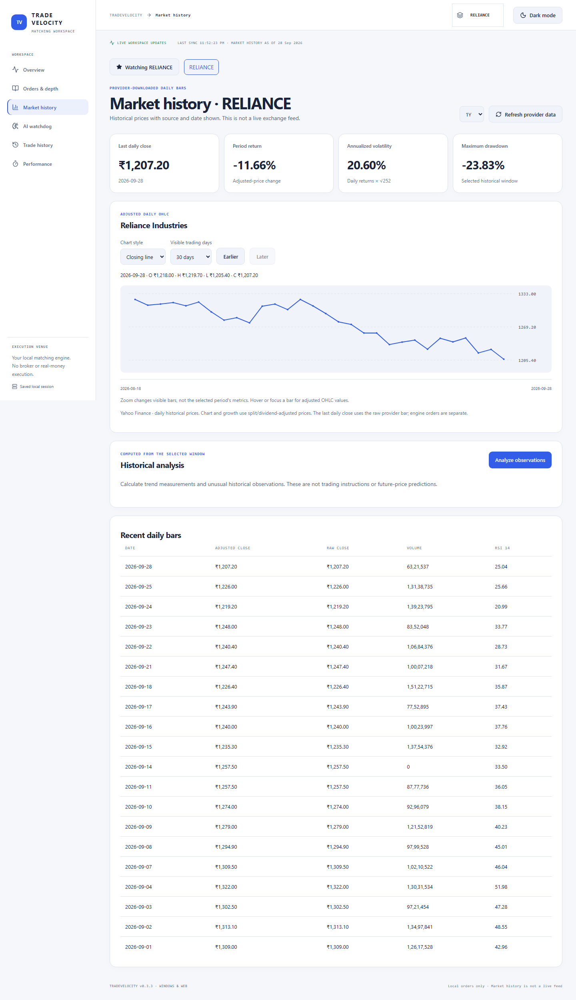

SELL
Place 5 shares at ₹100
The sell order waits on the book. It is now the resting order.
An ADSA project by Hash Syndicate
TradeVelocity is a practice stock order book. Place a buy or sell order, watch the engine match it, and inspect what remains on the book. We built it to make the data structures behind trading easier to see and try.
Practice orders only. No broker connection, money, or real shares.

Market history is separate from the practice order book and uses dated daily data.
A match in three steps
Here is a small example you can recreate in the app after you make a trader account. The first-run guide can be skipped or opened again later.
The sell order waits on the book. It is now the resting order.
The buy price crosses the sell price, so the engine can match them.
The resting order sets the price. Two sell shares stay on the book.
Open Orders & depth to place the orders, then check Trade history to see the result.
Inside the app
Each screen helps answer a different question about orders, trades, and the way the engine behaves.
Place limit and market orders. See the best prices, depth, partial fills, and open orders you can amend or cancel.
Search executions, export trades, and save or restore your practice session.
Explore dated daily bars and charts for eight supported companies. These are historical data, not live quotes.
Review unusual patterns in your own executions. Alerts are advisory and never block an order.
Run an isolated workload to compare the indexed order book with a list-based reference.
Heaps, AVL trees, FIFO queues, hash tables, and a Fenwick tree each have a job in the engine.
Read the architecture notesGet started
The web version stores trader workspaces in PostgreSQL. The Windows download keeps its session on your PC. The Android build is a test APK that opens the hosted app.
01 / WEB
Create an account, follow or skip the guide, and place your first practice order.
Open TradeVelocity02 / WINDOWS
Extract the complete portable ZIP and open Launch_Desktop.vbs. This build is unsigned.
03 / ANDROID
Install the debug-signed build on Android. It needs internet access to reach the hosted app.
Download Android APKThe free web host may take a moment to wake up. We tested the Windows package on Windows 11 and the Android APK on an emulator; a second Windows PC and a physical phone are still untested.
The people behind it
We developed and integrated TradeVelocity together for our Advanced Data Structures and Algorithms project at Bennett University. These are the areas we explained in our group presentation; the codebase is shared.
Read the team pageWant a closer look?
The guided tour is there if you want it. You can skip it and explore at your own pace.